| Año | Colegios | Alumnos | % migrante | Disimilitud (Duncan) | Aislamiento ajustado (Bell) |
|---|---|---|---|---|---|
| 2009 | 860 | 24,622 | 8.8% | 48.1% | 14.5% |
| 2012 | 864 | 23,760 | 9.9% | 48.1% | 16.8% |
| 2015 | 976 | 31,640 | 10.9% | 46.3% | 15.8% |
| 2022 | 965 | 29,065 | 13.2% | 44.0% | 16.3% |
| 2025 | 954 | 28,478 | 18.7% | 40.8% | 17.0% |
6 Descriptivo: heterogeneidad, segregación y distractores digitales
Este capítulo responde a la pregunta que abrió esta fase del proyecto: ¿en qué medida la caída de España en PISA puede relacionarse con (1) el aumento de la heterogeneidad del aula –en particular la concentración de alumnado de origen migrante en determinados colegios– y (2) la presencia de distractores digitales (pantallas, redes sociales) en clase? Es un descriptivo, separado del modelo MAIHDA de qmd/04-resultados.qmd: usa series 2009-2025 y una asociación transversal en 2022, con intervalos de confianza frecuentistas (no credibilidad bayesiana). No es evidencia causal ni pretende serlo – ver la síntesis al final de cada sección sobre qué sí y qué no permite concluir.
Se genera a partir de R/05_segregacion_heterogeneidad.R (heterogeneidad y segregación), R/06_exposicion_digital.R (distractores digitales), R/07_migracion_puntuacion.R (univariante de migración y escala de puntos), R/08_tendencias_ccaa.R (tendencias por CCAA) y R/09_modelo_covariables_colegio.R (modelo mixto con covariables de colegio, sección 3); el texto lee directamente las tablas guardadas, así que se actualiza solo al volver a ejecutar esos scripts.
6.1 1. Heterogeneidad y segregación del alumnado de origen migrante
6.1.1 1.1 Más alumnado migrante, ¿más concentrado en los mismos colegios?
El peso del alumnado de origen migrante (1ª+2ª generación) en la muestra española ha subido de forma sostenida, de 8.8% en 2009 a 18.7% en 2025. Esto por sí solo no dice nada sobre segregación: que haya más alumnado migrante no implica que esté más desigualmente repartido entre colegios. Para eso se calculan dos índices estándar de la literatura de segregación escolar, ambos entre 0 y 1:
- Índice de disimilitud (Duncan & Duncan, 1955): qué proporción del alumnado migrante tendría que cambiar de colegio para que la composición fuera idéntica en todos los colegios.
- Índice de aislamiento ajustado (Bell, 1954): en qué grado el alumnado migrante comparte colegio con otro alumnado migrante, por encima de lo que cabría esperar solo por su peso en la población (0 = mezcla aleatoria, 1 = aislamiento completo).
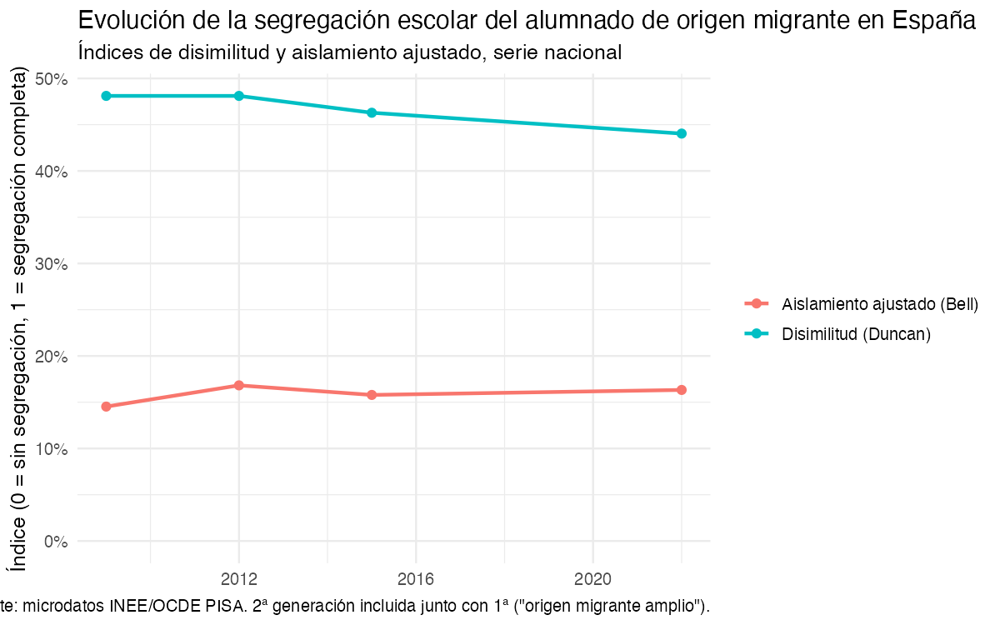
El resultado es, a primera vista, contraintuitivo: mientras el peso migrante sube con claridad, el índice de disimilitud no sube – se mantiene plano o baja (48.1% en 2009 frente a 40.8% en 2025), y el aislamiento ajustado se mueve en una banda estrecha sin tendencia definida. Es decir: el alumnado migrante no está cada vez más desigualmente repartido entre colegios en general – lo que sí es estable y robusto en toda la serie es la sobrerrepresentación en la pública frente a la privada, que se analiza a continuación. Conviene matizar así cualquier narrativa de “cada vez más segregados”: el mecanismo que sostiene la evidencia es la titularidad del centro, no una fragmentación creciente del sistema escolar en su conjunto.
6.1.2 1.2 Segregación por comunidad autónoma
| CCAA | Colegios | % migrante | Disimilitud | Aislamiento ajustado |
|---|---|---|---|---|
| Melilla | 10 | 19.6% | 49.3% | 19.4% |
| Extremadura | 58 | 6.1% | 45.1% | 8.6% |
| Navarra | 57 | 25.2% | 43.7% | 20.2% |
| Cataluña | 51 | 25.0% | 40.9% | 20.3% |
| Andalucía | 55 | 12.0% | 40.6% | 13.2% |
| Asturias | 56 | 11.6% | 40.6% | 10.6% |
| Canarias | 55 | 21.0% | 40.1% | 15.7% |
| Aragón | 54 | 24.2% | 40.0% | 20.4% |
| Madrid | 52 | 23.4% | 40.0% | 18.3% |
| País Vasco | 55 | 12.4% | 36.4% | 9.0% |
| Cantabria | 57 | 14.3% | 35.7% | 12.1% |
| Comunidad Valenciana | 54 | 27.3% | 35.6% | 16.8% |
| Galicia | 61 | 13.2% | 35.3% | 11.1% |
| La Rioja | 47 | 26.4% | 34.8% | 13.8% |
| Murcia | 50 | 24.8% | 34.3% | 14.6% |
| Castilla y León | 59 | 14.4% | 33.6% | 8.9% |
| Illes Balears | 55 | 27.7% | 29.1% | 13.2% |
| Castilla-La Mancha | 55 | 16.6% | 28.2% | 7.9% |
| Ceuta | 13 | 12.4% | 27.1% | 5.1% |
La variación territorial es sustancial (ver tabla), y es precisamente el valor añadido de este proyecto frente al internacional: una cifra nacional plana esconde comunidades con segregación alta y estable, y otras con segregación baja pero al alza – se ve mejor en la serie completa de abajo.
6.1.3 1.3 Evolución de la segregación por CCAA
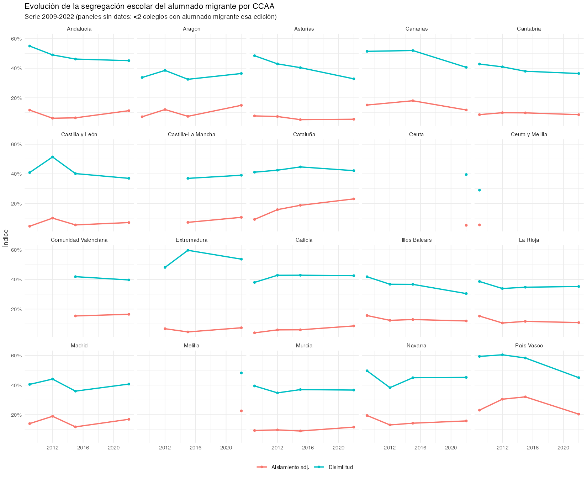
Con la serie completa por CCAA se ve lo que la tabla nacional no puede mostrar: la disimilitud baja con claridad en la gran mayoría de comunidades – 15 de las 19 con datos en al menos dos ediciones, entre ellas País Vasco, Andalucía, Illes Balears – y solo sube de forma clara en Aragón – la lectura nacional “plana” es, en parte, la suma de tendencias territoriales que en su mayoría apuntan a la baja, con alguna excepción puntual. Con los datos de 2025 incorporados, de las dos comunidades que subían hasta 2022, Castilla-La Mancha ha pasado a bajar con claridad y Cataluña ha dejado de subir (cambio prácticamente nulo en toda la serie, -0,2 p.p.) – un cambio real, no solo de matiz, respecto a lo que decía este mismo párrafo con el informe anterior; ver data/tbl_cambio_ccaa.rds para el detalle exacto por comunidad. El aislamiento ajustado es más estable dentro de cada CCAA que entre CCAA: hay comunidades que parten de un nivel bajo y se quedan ahí, y otras (Cataluña, País Vasco) con aislamiento estructuralmente más alto en las cuatro ediciones. Algunos paneles quedan vacíos o con un único punto – son ediciones con menos de 2 colegios con alumnado migrante en esa CCAA, donde el índice no es estable (ver aviso en R/05_segregacion_heterogeneidad.R); es también el motivo de que “Ceuta y Melilla” (código conjunto de 2009) y “Ceuta”/“Melilla” (2022, ya separados) aparezcan como tres paneles distintos en vez de uno.
6.1.4 1.4 Brecha de escolarización pública/privada
| Año | % nativo en pública | % migrante en pública | Brecha (p.p.) | IC95% inf. | IC95% sup. | Cobertura dato |
|---|---|---|---|---|---|---|
| 2009 | 48.4% | 61.0% | 12.6% | 6.7% | 18.4% | 24.4% |
| 2012 | 63.9% | 74.2% | 10.3% | 7.5% | 13.2% | 99.9% |
| 2015 | 66.2% | 79.2% | 13.0% | 11.0% | 15.1% | 95.6% |
| 2022 | 64.5% | 77.5% | 13.0% | 11.0% | 15.1% | 100.0% |
| 2025 | 64.6% | 76.9% | 12.2% | 10.4% | 14.0% | 100.0% |
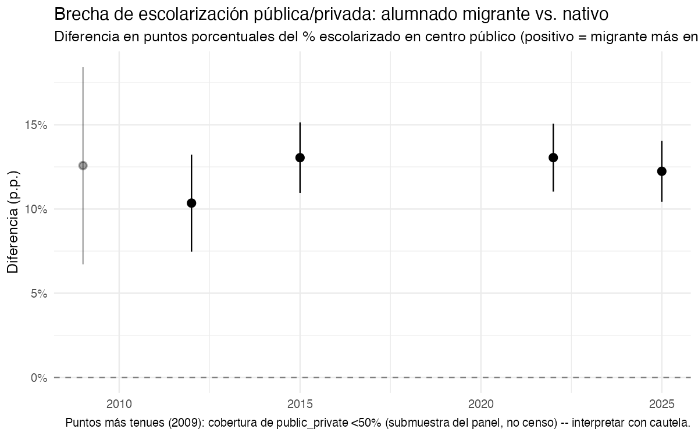
A diferencia de los índices de disimilitud/aislamiento, esta brecha sí es grande y significativa en las cinco ediciones: el alumnado migrante está entre 10.4% y 14.0% puntos más presente en la pública que el nativo en 2025 (brecha puntual: 12.2%). Pero, a diferencia de las ediciones anteriores, en 2025 la brecha es notablemente menor que en la edición previa (13.0% en 2022, IC95% 11.0%–15.1%) – los dos intervalos no se solapan, así que no es ruido: la brecha se ha reducido de forma real entre 2022 y 2025, aunque sigue siendo grande. 2009 (12.6%, IC95% 6.7%–18.4%) procede de una submuestra parcial (cobertura 24.4%, ver R/01c_incorporate_public_private_historic.R) y debe leerse con más cautela que el resto, aunque apunta en la misma dirección. En conjunto: la brecha público-privado migrante-nativo no es un rasgo plano del sistema – se ha movido, y en 2025 se ha movido a la baja.
6.1.5 1.5 Puntuación por origen migrante (univariante)
Todo lo anterior mira cómo se reparte el alumnado migrante entre colegios; esto mira directamente su puntuación, sin ajustar por nada – nativo, 1ª generación y 2ª generación por separado (a diferencia del resto del capítulo, que los agrupa como “origen migrante amplio” para calcular segregación). Es el paso previo, descriptivo, al modelo ajustado de la sección 3.
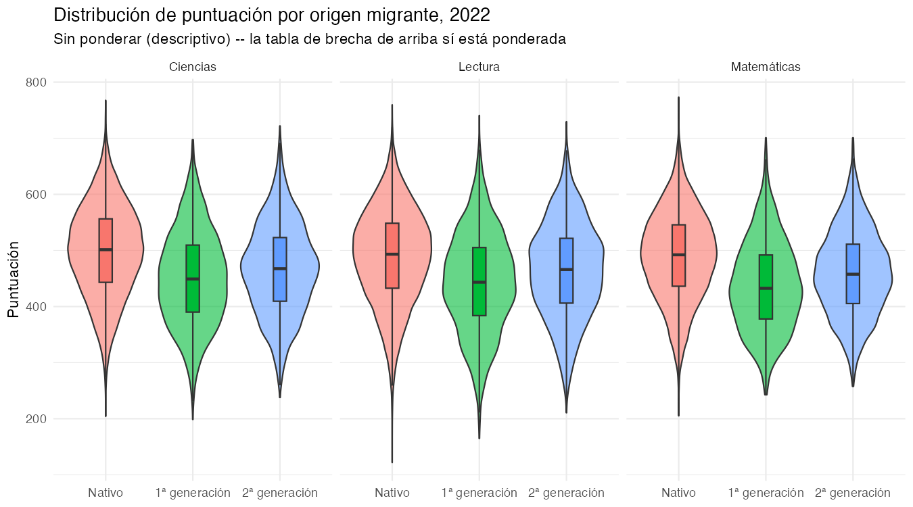
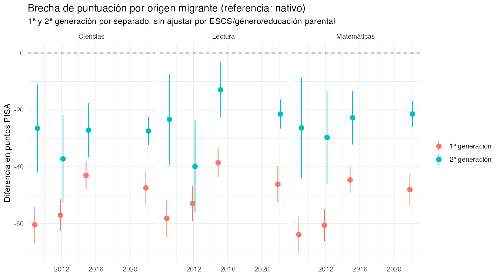
La brecha es grande en las cuatro ediciones y en los tres dominios, y con un patrón muy consistente: la 1ª generación (alumnado nacido fuera de España) puntúa muy por debajo del nativo – en 2025 y matemáticas, -55 puntos menos (IC95% -60 a -51) – mientras que la 2ª generación (nacida en España, de familia migrante) tiene una brecha bastante menor, -29 puntos (IC95% -33 a -25), sistemáticamente la mitad o menos de la de 1ª generación en los tres dominios y las cinco ediciones. Es el patrón de “convergencia generacional” habitual en la literatura de migración – y un matiz importante para la pregunta de investigación: agregar 1ª y 2ª generación en un único “origen migrante” (como hace el resto del capítulo, por necesidad para el índice de segregación) esconde que se trata de dos poblaciones con una brecha de resultado muy distinta. La brecha de 1ª generación sigue siendo más estrecha en 2025 que en 2009 en los tres dominios, pero no de forma monótona, y el repunte más reciente es sustancial, no un matiz menor: entre 2022 y 2025 la brecha de 1ª generación se ha ensanchado de nuevo en los tres dominios –por ejemplo en matemáticas, de 48 puntos en 2022 a 55 puntos en 2025–, y lo mismo ocurre con la brecha de 2ª generación, que en 2025 es, en matemáticas, incluso algo mayor que en 2009 (29 puntos frente a 26 puntos en 2009, ver tabla arriba). Esto pasa pese a que el peso migrante ha subido en todo el periodo (sección 1.1) y, sobre todo, pese a que la composición migrante ha cambiado de forma sustancial entre 2022 y 2025 (más 1ª generación de nuevo, ver sección 1.1) – ambas cosas son compatibles con una explicación puramente composicional (una oleada migratoria más reciente, con menos tiempo de adaptación al sistema educativo, tiene en promedio peor resultado sin que el sistema en sí se haya vuelto menos equitativo) tanto como con una explicación de contexto (peor integración). Estos datos no permiten distinguir entre ambas – es otra pieza que pide cautela antes de convertir el patrón 2022-2025 en una narrativa simple de “más migración, peor resultado” o de lo contrario.
6.1.6 1.6 Evolución de la puntuación por CCAA, y su relación con la segregación
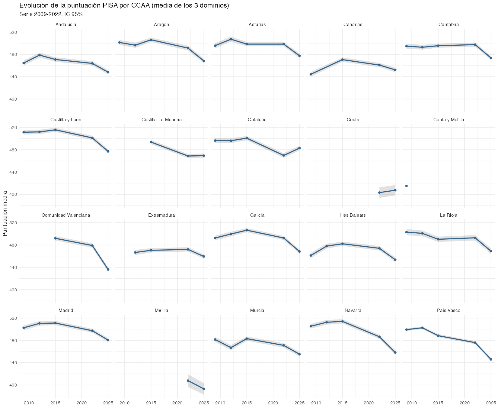
Como con la segregación, la caída nacional agregada esconde trayectorias muy distintas por CCAA – y la incorporación de 2025 cambia el cuadro respecto a mirar solo hasta 2022, en más de un caso:
| Cambio 2022 -> 2025, ordenado de mayor caída a mayor subida | |||
| Comunidad autónoma | Cambio | IC 95% | IC excluye 0 |
|---|---|---|---|
| Comunidad Valenciana | -43.0 | -48.7 – -37.3 | Sí |
| País Vasco | -30.1 | -34.6 – -25.6 | Sí |
| Navarra | -28.2 | -33.7 – -22.7 | Sí |
| Galicia | -24.3 | -29.5 – -19 | Sí |
| Castilla y León | -24.2 | -29.6 – -18.7 | Sí |
| La Rioja | -24.0 | -30.9 – -17 | Sí |
| Cantabria | -23.9 | -29.1 – -18.6 | Sí |
| Aragón | -23.1 | -28.9 – -17.3 | Sí |
| Asturias | -21.0 | -26.5 – -15.4 | Sí |
| Illes Balears | -20.5 | -26.2 – -14.8 | Sí |
| Madrid | -16.9 | -21.9 – -11.9 | Sí |
| Murcia | -16.0 | -21.7 – -10.3 | Sí |
| Andalucía | -15.8 | -21.3 – -10.2 | Sí |
| Melilla | -14.8 | -30 – 0.4 | No |
| Extremadura | -12.7 | -18 – -7.3 | Sí |
| Canarias | -8.6 | -14.1 – -3.1 | Sí |
| Castilla-La Mancha | 0.6 | -4.6 – 5.8 | No |
| Ceuta | 4.3 | -8.9 – 17.4 | No |
| Cataluña | 13.2 | 7.4 – 19.1 | Sí |
País Vasco sigue siendo la comunidad con el declive más sostenido – edición tras edición desde 2012, y con una caída significativa también entre 2022 y 2025 (ver tabla). Navarra continúa igual: caída significativa en el último paso también. Pero Cataluña rompe el patrón que este párrafo describía con los datos hasta 2022: lejos de “caer de golpe en la última edición”, es la única comunidad con una subida significativa entre 2022 y 2025 (+13.2 puntos, IC 7.4 a 19.1) – justo lo contrario de lo que sugería la edición anterior de este informe, que solo llegaba hasta 2022. Canarias e Illes Balears, que “subían en toda la serie” hasta 2022, también caen entre 2022 y 2025 (ambas con IC que excluye el cero, ver tabla) – aunque su pendiente de 5 ediciones sigue siendo positiva en conjunto (ver qmd/04-resultados.qmd, sección 4): una comunidad puede tener una tendencia larga positiva y, aun así, caer en el último paso concreto; las dos cosas no se contradicen, describen periodos distintos. Este es probablemente el ejemplo más claro, en todo el informe, de por qué mirar solo hasta la penúltima edición puede llevar a una conclusión que la edición siguiente revierte – una razón más para leer con cautela cualquier lectura de tendencia que se apoye en pocos puntos.
¿Coinciden las CCAA que más han subido en segregación con las que más han caído en puntuación? Es la pregunta natural dado todo lo anterior – la respuesta, con la cautela que exige mirarla con solo 19 comunidades:
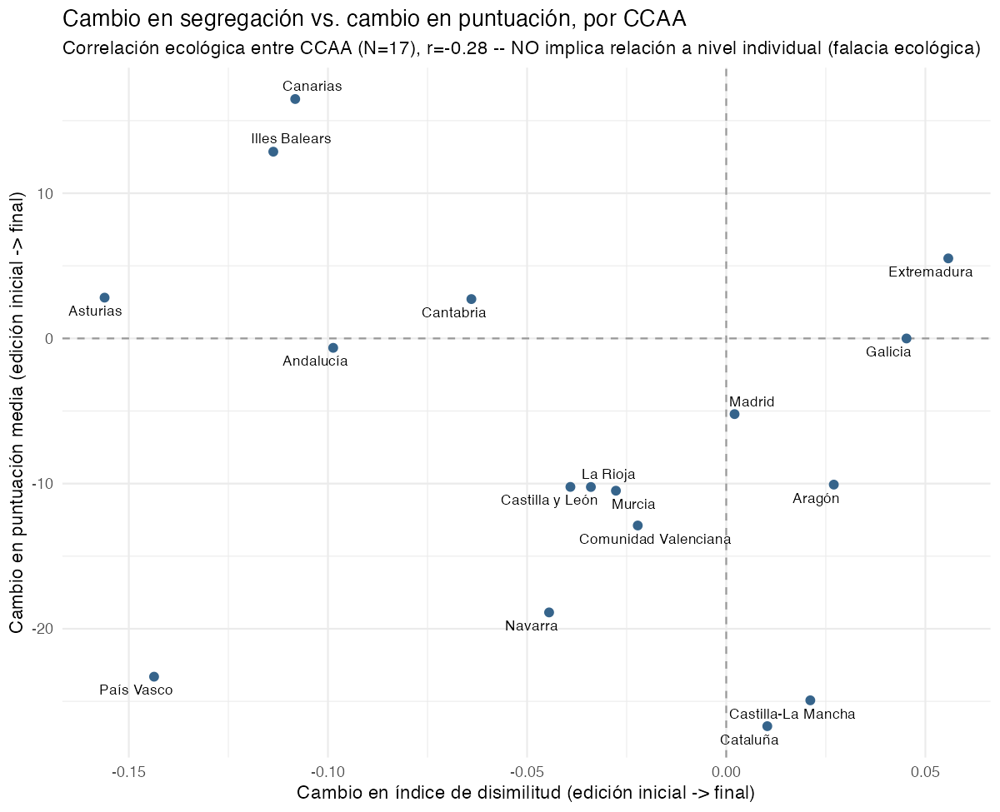
La correlación es débil y no significativa: r = 0.02 (IC95% -0.44 a 0.47, p = 0.93, N = 19 CCAA). El signo apunta en la dirección esperada por H1 (más aumento de disimilitud, más caída de puntuación), pero el intervalo es tan ancho que cruza ampliamente el cero, y hay contraejemplos claros a simple vista – el caso más llamativo es País Vasco, con una de las mayores caídas de disimilitud (menos segregación) y a la vez una de las mayores caídas de puntuación, justo lo contrario de lo que predeciría H1. Con solo 17 puntos no hay potencia estadística para zanjar nada aquí; esto es una foto de conjunto, no una prueba, y es una correlación ecológica: un patrón (o su ausencia) entre promedios de CCAA no implica ni descarta ninguna relación a nivel de alumno individual.
6.2 2. Distractores digitales en el aula
6.2.1 2.1 Serie histórica del proxy de exposición (2009-2022)
| Año | Media | IC95% inf. | IC95% sup. | N |
|---|---|---|---|---|
| 2009 | 3.17 | 3.16 | 3.19 | 24,592 |
| 2012 | 3.03 | 3.01 | 3.06 | 22,985 |
| 2015 | 2.89 | 2.86 | 2.91 | 30,789 |
| 2022 | 2.38 | 2.36 | 2.40 | 26,292 |
| 2025 | 2.38 | 2.36 | 2.40 | 22,845 |
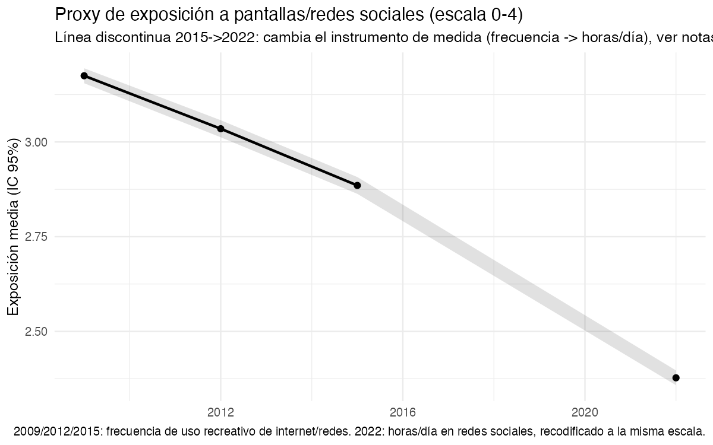
Aviso metodológico, imprescindible para no sobre-interpretar esta serie: no existe un ítem comparable de “distracción/uso de pantallas” en las cuatro ediciones. 2009-2015 miden frecuencia de uso recreativo de internet/redes (nunca -> varias veces al día); 2025 mide horas al día en redes sociales, un constructo distinto (para esa edición casi todo el alumnado ya usa redes a diario, así que la pregunta relevante pasó de “si” a “cuánto”). Los dos se recodifican aquí a la misma escala 0-4 solo para poder dibujarlos en una serie, pero el salto entre 2015 y 2025 (línea discontinua en el gráfico) mezcla un cambio de instrumento con cualquier cambio real de comportamiento – la caída aparente de 79% a 60% (sobre la escala 0-4) casi seguro no significa que el alumnado use hoy menos pantallas que en 2009; es más plausible que sea, al menos en parte, un artefacto de instrumento. Esta serie es contexto/tendencia, no la evidencia que responde a la pregunta de investigación – para eso está la sección 2.2.
6.2.2 2.2 Asociación transversal 2022: distracción en clase y puntuación
Aquí sí hay un ítem “fuerte” y específico, nuevo en 2022, sin equivalente en ediciones anteriores: con qué frecuencia el alumnado se distrae en clase por su propio dispositivo, o por el de sus compañeros. Se modela score_z ~ distracción + ESCS + género + educación parental, por dominio, con errores estándar robustos agrupados por colegio (sandwich CR1) para no subestimar la incertidumbre por el diseño en clusters.
| Frecuencia declarada | Matemáticas | Lectura | Ciencias |
|---|---|---|---|
| Dispositivo de compañeros | |||
| Algunas clases | -0.17 (-0.21, -0.13) | -0.19 (-0.23, -0.15) | -0.17 (-0.21, -0.13) |
| Cada clase | -0.51 (-0.60, -0.43) | -0.50 (-0.58, -0.42) | -0.51 (-0.59, -0.43) |
| La mayoría de clases | -0.24 (-0.30, -0.19) | -0.27 (-0.32, -0.21) | -0.18 (-0.24, -0.13) |
| Dispositivo propio | |||
| Algunas clases | -0.17 (-0.22, -0.12) | -0.16 (-0.21, -0.11) | -0.16 (-0.21, -0.11) |
| Cada clase | -0.34 (-0.41, -0.27) | -0.34 (-0.41, -0.27) | -0.34 (-0.41, -0.26) |
| La mayoría de clases | -0.19 (-0.24, -0.14) | -0.19 (-0.24, -0.13) | -0.12 (-0.17, -0.07) |
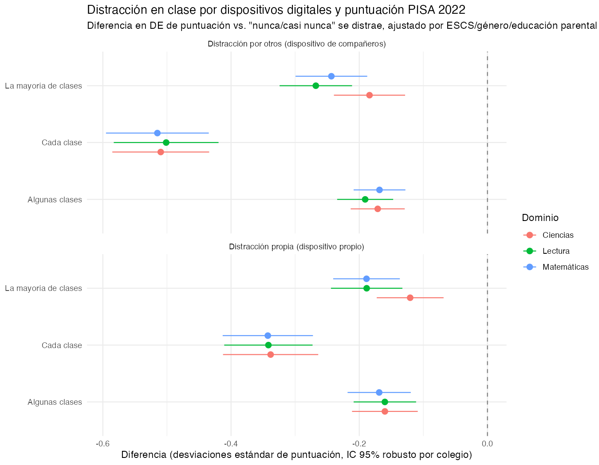
Los tres resultados son consistentes, estadísticamente robustos (más de 960 colegios como unidad de agrupación en todos los modelos) y van todos en la misma dirección. Distraerse “cada clase” por el propio dispositivo se asocia con entre 0.34 y 0.34 DE menos de puntuación según el dominio, frente a “nunca/casi nunca”; distraerse por el dispositivo de compañeros “cada clase” tiene una asociación todavía mayor, entre 0.50 y 0.51 DE – es decir, el entorno de clase (lo que hacen los demás) pesa al menos tanto como el propio uso. La intensidad de uso de redes sociales (horas/día, 2022) muestra un gradiente más moderado pero también significativo: entre 0.05 y 0.08 DE por cada categoría de horas adicional, en los tres dominios.
| Frecuencia declarada | Matemáticas | Lectura | Ciencias |
|---|---|---|---|
| Dispositivo de compañeros | |||
| Algunas clases | -13 (-17, -10) | -16 (-20, -12) | -14 (-17, -11) |
| Cada clase | -41 (-47, -35) | -42 (-49, -36) | -42 (-48, -36) |
| La mayoría de clases | -19 (-24, -15) | -23 (-27, -18) | -15 (-20, -11) |
| Dispositivo propio | |||
| Algunas clases | -13 (-17, -9) | -13 (-18, -9) | -13 (-17, -9) |
| Cada clase | -27 (-33, -22) | -29 (-35, -23) | -28 (-34, -22) |
| La mayoría de clases | -15 (-19, -11) | -16 (-21, -11) | -10 (-14, -6) |
En puntos (que es lo que de verdad se compara con la caída de la última edición en el debate público): distraerse “cada clase” por el propio dispositivo se asocia con unos 27-29 puntos menos, y por el dispositivo de un compañero, unos 41-42 puntos menos – para referencia, una DE bruta de puntuación en 2022 son unos 82 puntos en matemáticas (tabla de escala completa al final del capítulo), así que estos efectos son grandes: entre un tercio y la mitad de una DE.
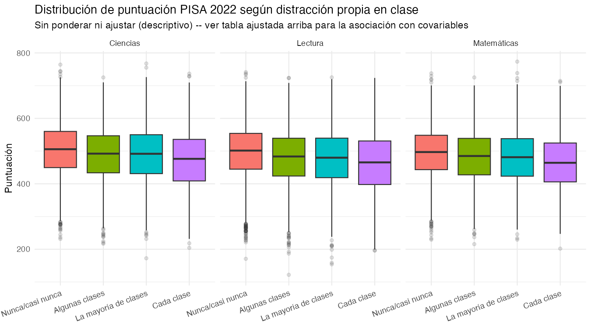
6.2.3 2.3 2022 frente a 2025: ¿ha cambiado la asociación entre distracción y nota?
Añadido el 2026-09-21, a petición de Julián. La serie histórica de la sección 2.1 se extiende ahora hasta 2025 (mismo ítem que 2022, IC178Q02JA, ver R/06_exposicion_digital.R pieza (A) ampliada – a diferencia del salto 2009-2015, el tramo 2022-2025 sí es directamente comparable, sin cambio de instrumento):
| Año | Media | IC95% inf. | IC95% sup. | N |
|---|---|---|---|---|
| 2009 | 3.17 | 3.16 | 3.19 | 24,592 |
| 2012 | 3.03 | 3.01 | 3.06 | 22,985 |
| 2015 | 2.89 | 2.86 | 2.91 | 30,789 |
| 2022 | 2.38 | 2.36 | 2.40 | 26,292 |
| 2025 | 2.38 | 2.36 | 2.40 | 22,845 |
La media apenas se mueve entre 2022 y 2025 (2.38 frente a 2.38, sobre la escala 0-4) – el tiempo declarado en redes sociales, a nivel nacional, se ha estabilizado, no ha seguido cayendo ni ha repuntado. Pero esa media agregada no dice si la asociación entre distracción y nota ha cambiado. Para eso se repite el modelo de la sección 2.2 en 2025, con los dos predictores que sí tienen un ítem idéntico en ambas ediciones (distr_propia y horas_redes – distr_pares, distracción por compañeros, no tiene equivalente en 2025, ver aviso en R/06_exposicion_digital.R):
| Frecuencia/nivel | Matemáticas 2022 | Lectura 2022 | Ciencias 2022 | Matemáticas 2025 | Lectura 2025 | Ciencias 2025 |
|---|---|---|---|---|---|---|
| Distracción propia (dispositivo propio) | ||||||
| Algunas clases | -13 (-17, -9) | -13 (-18, -9) | -13 (-17, -9) | -4 (-7, -1) | -9 (-12, -5) | -6 (-9, -2) |
| Cada clase | -27 (-33, -22) | -29 (-35, -23) | -28 (-34, -22) | -24 (-30, -19) | -37 (-43, -31) | -28 (-34, -22) |
| La mayoría de clases | -15 (-19, -11) | -16 (-21, -11) | -10 (-14, -6) | -8 (-12, -4) | -13 (-17, -8) | -11 (-16, -7) |
| Horas/día en redes sociales | ||||||
| (por paso de escala) | -6 (-8, -5) | -4 (-6, -3) | -7 (-8, -5) | -6 (-7, -4) | -2 (-3, -0) | -5 (-6, -3) |
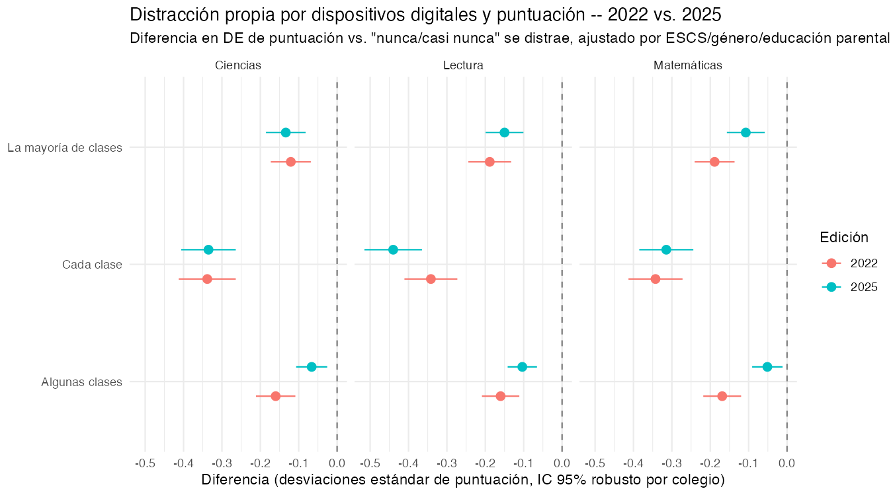
La categoría más severa, “cada clase”, se mantiene con una penalización grande y significativa en las dos ediciones – similar en matemáticas, algo mayor en 2025 que en 2022 en lectura (no se suaviza en el extremo). Pero las categorías intermedias sí cambian con claridad: “algunas clases” y “la mayoría de clases” tienen una penalización notablemente menor en 2025, sobre todo en matemáticas. Y la intensidad de uso de redes (horas_redes) también se debilita en 2025 en los tres dominios, de forma más marcada en lectura, donde el intervalo casi toca el cero (ver tabla). Es decir: el patrón no es uniforme – se suaviza en el tramo bajo-medio de distracción, pero no en el extremo.
| Frecuencia declarada | % |
|---|---|
| 2022 | |
| Nunca/casi nunca | 37.2% |
| Algunas clases | 30.0% |
| La mayoría de clases | 20.6% |
| Cada clase | 12.2% |
| 2025 | |
| Nunca/casi nunca | 37.2% |
| Algunas clases | 33.6% |
| La mayoría de clases | 18.3% |
| Cada clase | 10.9% |
La prevalencia ayuda a interpretar por qué: “nunca/casi nunca” se mantiene exactamente igual entre ediciones, pero hay un desplazamiento desde las categorías más severas hacia “algunas clases” – hay, en 2025, algo menos alumnado en las categorías más graves de distracción declarada, no más. Eso por sí solo podría explicar parte de la penalización menor en las categorías intermedias (menos “casos límite” en esa categoría, media más parecida a la de “nunca”), pero no explica por qué la asociación también se debilita en horas_redes, una variable continua no sujeta al mismo efecto de recomposición de categorías. Para separar las dos cosas se descompone el cambio en dos componentes: cuánto se debe a que cambió cuánta gente está en cada categoría (composición) y cuánto a que cambió cuánto pesa cada categoría en la nota (coeficiente/asociación) – ver el aviso extenso en R/06_exposicion_digital.R sobre las limitaciones de esta descomposición (es contabilidad aritmética de un cambio observado, no un modelo causal, y depende de la convención elegida para el reparto):
| Dominio | Coste 2022 | Coste 2025 | Cambio total | ... por composición | ... por asociación |
|---|---|---|---|---|---|
| Distracción propia | |||||
| Matemáticas | 10.4 | 5.5 | -4.9 | -0.2 | -4.7 |
| Lectura | 10.8 | 9.2 | -1.6 | -0.3 | -1.3 |
| Ciencias | 9.3 | 7.1 | -2.3 | -0.1 | -2.2 |
| Horas/día en redes | |||||
| Matemáticas | 15.2 | 13.1 | -2.0 | 0.0 | -2.0 |
| Lectura | 10.1 | 3.8 | -6.3 | 0.0 | -6.3 |
| Ciencias | 16.0 | 11.4 | -4.6 | 0.0 | -4.6 |
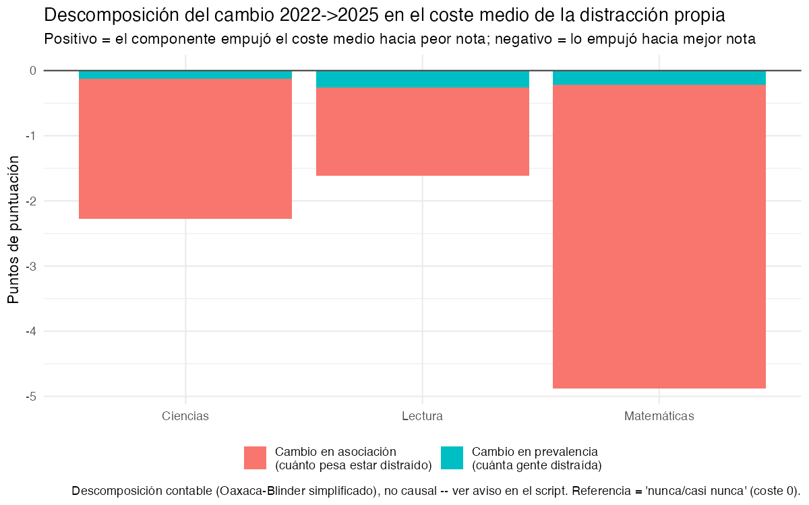
El resultado es consistente en las seis combinaciones (2 predictores x 3 dominios): el componente de composición (cuánta gente está en cada categoría) es siempre pequeño, a veces incluso de signo contrario al cambio total; el grueso del cambio – en todos los casos – viene del componente de asociación (cuánto pesa, ajustado, cada categoría en la nota). Dicho de otro modo: el “coste” medio de la distracción ha bajado entre 2022 y 2025 sobre todo porque la relación entre distracción declarada y nota se ha debilitado, no porque haya cambiado mucho cuánta gente se distrae. Esto no dice por qué se ha debilitado esa relación – podría reflejar que el ítem mide algo distinto en 2025 (el uso de pantallas ya generalizado discrimina menos entre alumnado), podría ser ruido de una sola edición, o podría ser un cambio real en cómo se relaciona el uso de dispositivos con el aprendizaje – estos datos no permiten distinguir entre esas explicaciones, solo describir el patrón.
6.3 3. Modelo mixto: ¿cuánto explican de la varianza entre colegios?
Las dos secciones anteriores examinan H1 y H2 por separado, cada una con su propio modelo. Esta sección los integra en un único modelo mixto, con la concentración migrante del colegio y la distracción agregada del colegio como covariables de nivel colegio, e interacción con el origen migrante individual, para valorar cuánta VARIANZA ENTRE COLEGIOS (VPC) explican. Se limita a 2022 – a diferencia del resto de este capítulo (que ya incorpora 2025), la distracción agregada de colegio no existe todavía para esa edición (sección 2.1), así que esta sección concreta sigue anclada en 2022 hasta que exista un ítem de distracción comparable en una edición posterior. Se ajustan cinco modelos anidados, por dominio (no un efecto trivariante como en qmd/04-resultados.qmd – aquí la pregunta es otra, y se opta deliberadamente por el análisis separado por resultado):
- M0 (nulo): solo colegio y CCAA como aleatorios, sin covariables.
- M1 (+individual): + género, educación parental, ESCS (cuartil), origen migrante – covariables que varían dentro de un mismo colegio.
- M2 (+público/privado): + titularidad del colegio. Añadido 2026-09-21 a petición de Julián como bloque propio, separado de M1: a diferencia de género/ESCS/origen migrante, es una covariable de nivel colegio (mismo valor para todo el alumnado de un centro), así que fusionarla con lo individual escondía cuánta VPC explica por sí sola la titularidad.
- M3 (+% migrante del colegio): + concentración de alumnado migrante del propio colegio (centrada).
- M4 (+distracción del colegio): + medias del colegio de distracción propia/por compañeros (centradas).
- M5 (+interacción): + origen migrante individual × % migrante del colegio.
| Modelo | N | VPC colegio | IC95% inf. | IC95% sup. |
|---|---|---|---|---|
| Ciencias | ||||
| M0: nulo | 30,800 | 15.7% | 14.6% | 17.1% |
| M1: +individual | 28,664 | 12.2% | 11.3% | 13.4% |
| M2: +público/privado | 28,664 | 11.0% | 10.1% | 12.0% |
| M3: +% migrante colegio | 28,664 | 10.9% | 10.0% | 11.9% |
| M4: +distracción colegio | 28,663 | 9.8% | 8.8% | 10.6% |
| M5: +interacción | 28,663 | 10.1% | 9.2% | 10.9% |
| Lectura | ||||
| M0: nulo | 30,800 | 17.2% | 15.8% | 18.5% |
| M1: +individual | 28,664 | 13.6% | 12.4% | 14.7% |
| M2: +público/privado | 28,664 | 12.9% | 11.9% | 14.1% |
| M3: +% migrante colegio | 28,664 | 12.8% | 11.8% | 14.0% |
| M4: +distracción colegio | 28,663 | 11.8% | 10.9% | 13.0% |
| M5: +interacción | 28,663 | 11.7% | 10.8% | 12.7% |
| Matemáticas | ||||
| M0: nulo | 30,800 | 18.9% | 17.4% | 21.3% |
| M1: +individual | 28,664 | 13.5% | 12.5% | 14.7% |
| M2: +público/privado | 28,664 | 12.6% | 11.7% | 13.8% |
| M3: +% migrante colegio | 28,664 | 12.3% | 11.3% | 13.3% |
| M4: +distracción colegio | 28,663 | 11.4% | 10.5% | 12.4% |
| M5: +interacción | 28,663 | 11.0% | 10.0% | 11.9% |
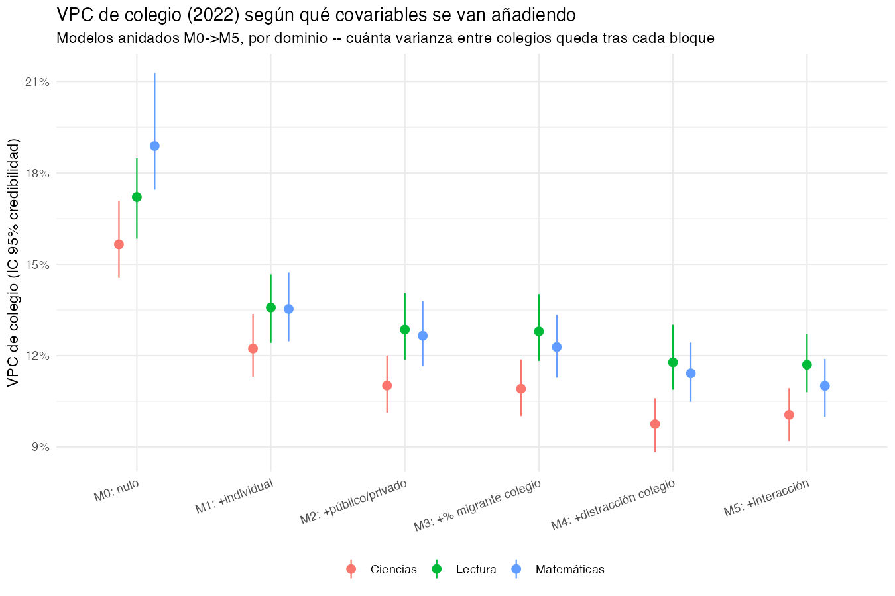
La lectura, en matemáticas como referencia (los otros dos dominios se mueven de forma parecida, con una salvedad en ciencias que se señala más abajo): el modelo nulo reparte 18.9% de la varianza total entre colegios. Añadir las covariables individuales (M1) es, con diferencia, lo que más baja esa cifra – 13.5% –, esperable, porque ESCS y origen migrante están fuertemente agrupados por colegio. Separar público/privado en su propio bloque (M2) baja algo más la cifra – 12.6% –, una bajada de VPC modesta, bastante menor que la de M1, y esto aunque el efecto de estar en un colegio privado, en puntos, es grande y muy consistente entre dominios:
| Dominio | Puntos | IC 95% |
|---|---|---|
| Matemáticas | 16.1 | 12.5 – 19.7 |
| Lectura | 16.7 | 12.7 – 20.6 |
| Ciencias | 15.9 | 12.3 – 19.4 |
En torno a 16 puntos PISA en los tres dominios, con intervalos de credibilidad íntegramente por encima de cero – una brecha bruta grande, del mismo orden que la penalización de la categoría más severa de distracción declarada (sección 2). Que un efecto tan grande apenas mueva el VPC (respecto a M1) no es contradictorio: indica que la mayor parte de la ventaja bruta de los colegios privados ya estaba absorbida por las covariables individuales de M1 – sobre todo por el ESCS, que predice fuertemente asistir a un colegio privado –, así que la etiqueta “público/privado” en sí misma añade poca varianza adicional entre colegios aunque su coeficiente ajustado, directo, siga siendo sustancial. Dicho de otro modo: gran parte de por qué el alumnado de colegios privados saca mejor nota ya se explicaba por quién va a esos colegios (composición social), no solo por la etiqueta del centro – pero persiste un efecto directo de la titularidad, del orden de 16 puntos, que esa composición no agota.
Añadir DESPUÉS la concentración migrante del propio colegio (M3) apenas mueve la aguja – 12.3%, un cambio casi nulo respecto a M2–: una vez se sabe quién es cada alumno (su propio origen, su ESCS) y si su colegio es público o privado, saber además cuán concentrado en migrantes está su colegio añade poco. Es un resultado que matiza más todavía la hipótesis de segregación de la sección 1: ni siquiera en un modelo que aísla el efecto de la composición del colegio aparece como un explicador fuerte de la varianza entre colegios. Añadir la distracción agregada del colegio (M4) sí baja algo más la cifra en los tres dominios – un paso proporcionalmente mayor que el de M3 –, aunque parte de esa bajada se debe también a que M4 exige que el colegio tenga dato de distracción (la muestra se reduce ligeramente). La interacción (M5) no cambia apenas el VPC total en matemáticas (11.4% a 11.0%) ni en lectura – en ciencias, de hecho, sube ligeramente en vez de bajar (9.8% a 10.1%), un movimiento pequeño que probablemente sea ruido de estimación más que un efecto real (añadir un término de interacción no debería, en principio, aumentar mecánicamente la varianza de colegio) – pero la interacción sí importa por sí misma, y es la pieza más interesante de este modelo:
| Generación | Puntos | IC95% inf. | IC95% sup. |
|---|---|---|---|
| Matemáticas | |||
| 1ª generación | −8.9 | −13.9 | −3.9 |
| 2ª generación | −14.5 | −19.2 | −9.9 |
| Lectura | |||
| 1ª generación | −0.7 | −6.2 | 4.8 |
| 2ª generación | −20.2 | −25.2 | −15.1 |
| Ciencias | |||
| 1ª generación | −36.2 | −41.5 | −30.8 |
| 2ª generación | −28.9 | −33.9 | −24.0 |
Esta interacción responde a una pregunta más precisa que la de M3: no “¿la concentración migrante del colegio predice peor resultado en general?” (apenas), sino “¿le va específicamente peor al alumnado migrante, concretamente en los colegios más concentrados, por encima de su propio origen y de la media del colegio?” – y aquí la respuesta es que sí, en 5 de los 6 casos (generación × dominio) el intervalo de credibilidad no cruza el cero, con penalizaciones adicionales que en ciencias llegan a rondar los 30-36 puntos. Es el hallazgo más nítido de este modelo: la concentración migrante del colegio no explica mucha varianza en promedio, pero el alumnado migrante escolarizado en un colegio muy concentrado sí sufre una penalización específica, más allá del efecto medio del colegio y de su propio origen por separado. Como el resto de esta sección, es asociación transversal de 2022, no causal: no se puede descartar que colegios muy concentrados en migrantes compartan otras características (recursos, rotación de profesorado, selección de alumnado por parte de las familias) que expliquen parte de esta interacción.
6.3.1 3.1 2022 frente a 2025: ¿se sostiene este modelo con datos más recientes?
Añadido el 2026-09-21, a petición de Julián: la distracción agregada de colegio no necesita el fichero de centros de 2025 – sale de promediar el ítem de alumno por colegio, y ese ítem (distr_propia) ya está extraído para 2025 desde la sección 2.3. El límite real es que distr_pares (distracción por compañeros) no tiene equivalente en 2025, así que R/09b_modelo_covariables_colegio_2022_2025.R ajusta un M4/M5 redefinido – solo con distracción propia, sin pares – por separado en 2022 y en 2025, con la misma especificación exacta en los dos años para que la comparación sea limpia. Añadido también el mismo día: público/privado como bloque propio (M2), separado de “individual” (M1), igual que en la sección 3 y por el mismo motivo (ver más abajo, es uno de los resultados más interesantes de esta comparación). El M0-M5 original de la sección 3 (con distracción por compañeros incluida en M4) no se toca y sigue siendo la referencia completa de 2022.
| Edición | Modelo | N | VPC colegio | IC95% inf. | IC95% sup. |
|---|---|---|---|---|---|
| Ciencias | |||||
| 2022 | M0: nulo | 30,800 | 15.7% | 14.5% | 17.1% |
| 2022 | M1: +individual | 28,664 | 11.5% | 10.6% | 12.6% |
| 2022 | M2: +público/privado | 28,664 | 11.0% | 10.1% | 12.0% |
| 2022 | M3: +% migrante colegio | 28,664 | 10.9% | 10.0% | 11.9% |
| 2022 | M4: +distracción propia colegio | 28,663 | 10.4% | 9.5% | 11.3% |
| 2022 | M5: +interacción | 28,663 | 10.4% | 9.4% | 11.2% |
| 2025 | M0: nulo | 29,966 | 18.1% | 16.8% | 19.5% |
| 2025 | M1: +individual | 27,353 | 14.2% | 13.1% | 15.5% |
| 2025 | M2: +público/privado | 27,353 | 14.0% | 12.9% | 15.2% |
| 2025 | M3: +% migrante colegio | 27,353 | 13.8% | 12.7% | 15.0% |
| 2025 | M4: +distracción propia colegio | 27,353 | 13.1% | 12.0% | 14.4% |
| 2025 | M5: +interacción | 27,353 | 13.2% | 12.0% | 14.2% |
| Lectura | |||||
| 2022 | M0: nulo | 30,800 | 16.6% | 15.3% | 17.9% |
| 2022 | M1: +individual | 28,664 | 13.6% | 12.4% | 14.7% |
| 2022 | M2: +público/privado | 28,664 | 12.8% | 11.9% | 14.1% |
| 2022 | M3: +% migrante colegio | 28,664 | 12.8% | 11.8% | 14.0% |
| 2022 | M4: +distracción propia colegio | 28,663 | 12.2% | 11.2% | 13.4% |
| 2022 | M5: +interacción | 28,663 | 12.2% | 11.2% | 13.3% |
| 2025 | M0: nulo | 29,966 | 19.8% | 18.4% | 21.3% |
| 2025 | M1: +individual | 27,353 | 16.8% | 15.4% | 18.2% |
| 2025 | M2: +público/privado | 27,353 | 17.0% | 15.6% | 18.3% |
| 2025 | M3: +% migrante colegio | 27,353 | 16.4% | 15.2% | 17.7% |
| 2025 | M4: +distracción propia colegio | 27,353 | 15.6% | 14.3% | 17.0% |
| 2025 | M5: +interacción | 27,353 | 15.6% | 14.4% | 16.9% |
| Matemáticas | |||||
| 2022 | M0: nulo | 30,800 | 18.9% | 17.4% | 21.5% |
| 2022 | M1: +individual | 28,664 | 13.5% | 12.3% | 14.7% |
| 2022 | M2: +público/privado | 28,664 | 12.7% | 11.6% | 13.8% |
| 2022 | M3: +% migrante colegio | 28,664 | 12.3% | 11.3% | 13.4% |
| 2022 | M4: +distracción propia colegio | 28,663 | 12.2% | 11.3% | 13.3% |
| 2022 | M5: +interacción | 28,663 | 11.7% | 10.6% | 12.9% |
| 2025 | M0: nulo | 29,966 | 17.5% | 15.8% | 18.8% |
| 2025 | M1: +individual | 27,353 | 13.4% | 12.3% | 14.5% |
| 2025 | M2: +público/privado | 27,353 | 13.2% | 12.2% | 14.3% |
| 2025 | M3: +% migrante colegio | 27,353 | 12.9% | 11.8% | 14.0% |
| 2025 | M4: +distracción propia colegio | 27,353 | 12.2% | 11.1% | 13.2% |
| 2025 | M5: +interacción | 27,353 | 12.3% | 11.1% | 13.3% |
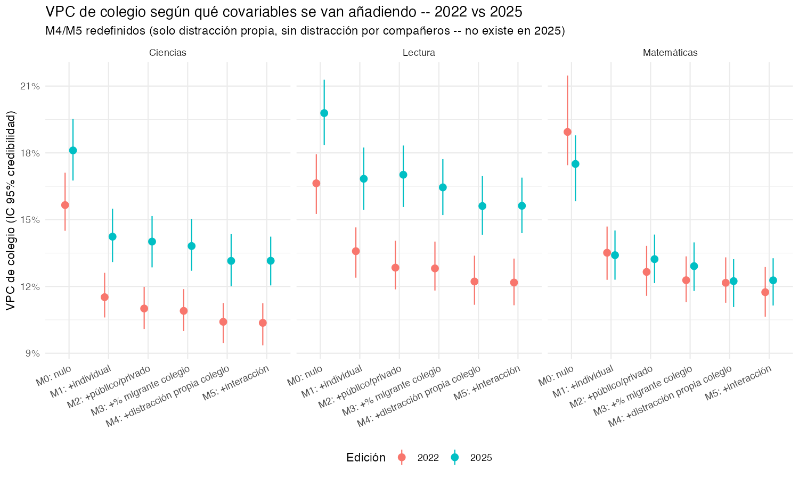
El VPC de colegio del modelo nulo (M0) es parecido en las dos ediciones en matemáticas, pero en lectura y ciencias es notablemente mayor en 2025 que en 2022, y ese exceso persiste tras añadir todas las covariables hasta M5 – en lectura, el modelo completo (M5) pasa de 12.2% en 2022 a 15.6% en 2025 (el nulo pasa de 16.6% a 19.8%). Es decir: en 2025 los colegios difieren más entre sí en lectura y ciencias de lo que explican estas mismas covariables, más que en 2022. (Nota metodológica: el VPC de M0 no depende de qué covariables se añadan después, así que en teoría debería coincidir entre esta comparación y la sección 3 para 2022 – las pequeñas diferencias que se ven, del orden de una décima de punto porcentual, son ruido de muestreo Monte Carlo en la extracción del VPC (extract_vpc_simple() usa inla.rmarginal() sin fijar semilla), no un cambio real; los coeficientes de efectos fijos – que no dependen de ese muestreo – sí son exactamente reproducibles entre 09 y 09b, ver más abajo.)
| Edición | Puntos | IC 95% |
|---|---|---|
| Matemáticas | ||
| 2022 | 16.1 | 12.5 – 19.7 |
| 2025 | 7.0 | 3.5 – 10.6 |
| Lectura | ||
| 2022 | 16.7 | 12.7 – 20.6 |
| 2025 | 10.0 | 5.5 – 14.5 |
| Ciencias | ||
| 2022 | 15.9 | 12.3 – 19.4 |
| 2025 | 7.8 | 3.7 – 11.9 |
Esta es, junto con la interacción migrante×colegio de más abajo, la pieza más interesante de la comparación 2022-2025: la ventaja ajustada de estudiar en un colegio privado se reduce a menos de la mitad entre 2022 y 2025 en los tres dominios (de 16-17 puntos en 2022 a 7-10 puntos en 2025), aunque el intervalo de credibilidad sigue sin cruzar el cero en 2025 – la brecha se estrecha, no desaparece. Esto es coherente con lo ya visto en la sección 1.4: la brecha de escolarización migrante-nativo entre pública y privada también se había reducido en 2025 respecto a la edición anterior. Ambas cosas podrían ser la misma historia contada dos veces – una convergencia de composición o de resultados entre la red pública y la privada en la edición más reciente – pero, como el resto de esta sección, es una comparación transversal entre dos ediciones, no una tendencia establecida: no se puede descartar que sea una fluctuación de esta cohorte concreta, ni distinguir con estos datos si la causa es un cambio en quién va a cada red, en cómo enseña cada red, o en ambas cosas a la vez.
| Edición | Puntos | IC 95% |
|---|---|---|
| Matemáticas | ||
| 2022 | -14.5 | -18.6 – -10.3 |
| 2025 | -19.0 | -24.2 – -13.8 |
| Lectura | ||
| 2022 | -16.6 | -21.2 – -12 |
| 2025 | -25.7 | -32 – -19.3 |
| Ciencias | ||
| 2022 | -14.3 | -18.4 – -10.1 |
| 2025 | -23.0 | -29 – -17.1 |
Y aquí aparece una tensión real con la sección 2.3, que conviene señalar sin suavizarla: a nivel individual, la asociación entre distracción declarada y nota se debilitaba entre 2022 y 2025. A nivel de colegio (esta tabla), el efecto de la distracción media del colegio sobre el rendimiento es más fuerte en 2025 en los tres dominios, no más débil. Las dos cosas pueden ser ciertas a la vez – son preguntas distintas (“¿cuánto pesa mi propia distracción declarada?” frente a “¿cuánto pesa el clima medio de distracción de mi colegio, más allá de mi propio nivel?”) – pero es exactamente el tipo de resultado que pide no quedarse con un solo número: el mecanismo de distracción parece haberse vuelto más un fenómeno de composición/clima del centro y menos un efecto puramente individual entre 2022 y 2025, aunque con una sola comparación no se puede afirmar que sea una tendencia consolidada.
| generacion | Edición | Puntos | IC 95% |
|---|---|---|---|
| Ciencias | |||
| 1ª generación | 2022 | -36.1 | -41.4 – -30.7 |
| 1ª generación | 2025 | -50.5 | -55.2 – -45.9 |
| 2ª generación | 2022 | -28.9 | -33.8 – -23.9 |
| 2ª generación | 2025 | -11.8 | -16.3 – -7.2 |
| Lectura | |||
| 1ª generación | 2022 | -0.6 | -6.1 – 4.9 |
| 1ª generación | 2025 | -51.7 | -56.3 – -47.2 |
| 2ª generación | 2022 | -20.1 | -25.1 – -15 |
| 2ª generación | 2025 | -19.6 | -24 – -15.2 |
| Matemáticas | |||
| 1ª generación | 2022 | -8.8 | -13.8 – -3.8 |
| 1ª generación | 2025 | -29.9 | -34 – -25.7 |
| 2ª generación | 2022 | -14.5 | -19.1 – -9.8 |
| 2ª generación | 2025 | 0.1 | -4 – 4.2 |
La interacción cambia de forma sustancial y no uniforme entre ediciones. Para la 1ª generación, la penalización de estar en un colegio muy concentrado en migrantes crece con claridad entre 2022 y 2025 en matemáticas y lectura (en lectura pasa de no ser significativa a ser una de las penalizaciones más grandes de toda la tabla), y se mantiene grande en ciencias. Para la 2ª generación, el patrón es el contrario en matemáticas (la penalización, significativa en 2022, desaparece en 2025) y se mantiene o se reduce algo en lectura y ciencias. Esto encaja con lo ya visto en la sección 1.1: el peso de la 1ª generación ha crecido más deprisa que el de la 2ª entre 2022 y 2025 (una migración más reciente, con menos tiempo de asentamiento) – consistente con que sea precisamente el alumnado de 1ª generación, y no el de 2ª, quien más sufre estar en un colegio muy concentrado en la edición más reciente. Como el resto de esta sección, es asociación transversal, no causal, y con una sola comparación entre dos ediciones no se puede distinguir un cambio estructural de una fluctuación de una sola cohorte.
6.4 4. Síntesis
Los dos mecanismos propuestos no tienen el mismo grado de apoyo empírico en estos datos, y el modelo conjunto de la sección 3 afina bastante el cuadro respecto a mirar cada pieza por separado. Esta síntesis se actualiza el 2026-09-21 con 2025 ya incorporado; donde el cuadro cambia respecto a mirar solo hasta 2022, se dice explícitamente.
Sobre heterogeneidad y segregación (H1): la heterogeneidad migrante ha aumentado con claridad (8.8% a 18.7% entre 2009 y 2025) y la brecha de escolarización migrante-nativo en la pública frente a la privada sigue siendo grande y significativa en las cinco ediciones, aunque en 2025 es notablemente menor que en la edición anterior (sección 1.4) – “estable” ya no describe bien esta brecha. Y algo parecido ocurre con la nota, no solo con la escolarización: en el modelo mixto (sección 3.1), la ventaja ajustada de estudiar en un colegio privado – grande en 2022, en torno a 16 puntos en los tres dominios – se reduce a menos de la mitad en 2025, aunque sigue sin desaparecer. Las dos brechas (escolarización y nota) estrechándose a la vez podría ser la misma convergencia contada dos veces, pero estos datos no permiten confirmarlo. Pese a esto, eso es, en conjunto, prácticamente todo lo que sostiene H1: la concentración/segregación entre colegios en general no crece – con 2025 incorporado la disimilitud baja con claridad en la gran mayoría de comunidades, incluidas dos que subían hasta 2022 (sección 1.3) –, la correlación ecológica entre cambio en segregación y cambio en puntuación por CCAA no es significativa (r = 0.02, p = 0.93, con contraejemplos claros como País Vasco), y en el modelo mixto de la sección 3 (2022) la concentración migrante del colegio apenas explica varianza entre colegios una vez se controla por quién es cada alumno. El hallazgo que sí sobrevive, y con fuerza, es más fino que “más segregación, peor resultado”: el alumnado migrante que está en colegios muy concentrados en migrantes rinde específicamente peor que el que no lo está, por encima de su propio origen y de la brecha media del colegio (interacción significativa en 5 de 6 combinaciones dominio×generación). Es una penalización de concentración real, pero dirigida al alumnado migrante, no una fragmentación creciente de todo el sistema. Un matiz nuevo, no relacionado con segregación entre colegios pero sí con origen migrante: la brecha de puntuación migrante-nativo, que se había ido estrechando entre 2009 y 2022 (“convergencia generacional”, sección 1.5), se ensancha de nuevo entre 2022 y 2025 en los tres dominios, tanto en 1ª como en 2ª generación – compatible tanto con un efecto de composición (una oleada migratoria más reciente, con menos tiempo de adaptación) como con un empeoramiento de contexto; estos datos no distinguen entre las dos.
Sobre distractores digitales (H2): la asociación transversal de 2022 es grande (10 a 42 puntos PISA según categoría y predictor, mayor cuanto más frecuente la distracción declarada), consistente entre los tres dominios y robusta a ajuste por ESCS/género/educación parental. En el modelo mixto de la sección 3 (2022), la distracción agregada del colegio también es, de las tres covariables de nivel colegio consideradas (público/privado, concentración migrante, distracción), la que más varianza entre colegios explica – más que la concentración migrante, y algo más que público/privado, aunque público/privado tiene el efecto en puntos más grande de las tres por separado (~16 puntos, la mayor parte ya absorbida por el ESCS individual antes de llegar a ese bloque). La novedad de esta actualización (sección 2.3) es que ahora sí hay un segundo punto temporal comparable (2025, mismo ítem que 2022) para dos de los tres predictores, y el resultado matiza la historia en una dirección que conviene señalar con honestidad: la asociación entre distracción declarada y nota se ha debilitado entre 2022 y 2025, sobre todo en las categorías de distracción intermedias y en horas de redes sociales, y la descomposición muestra que ese debilitamiento es casi todo él atribuible al cambio en la propia asociación, no a que haya cambiado cuánta gente se distrae (que, si acaso, ha bajado ligeramente en las categorías más severas). Solo la categoría más extrema (“cada clase”) mantiene una penalización grande y estable – incluso algo mayor en lectura. Esto no descarta H2: la asociación sigue siendo real y grande en el extremo, y la prevalencia global de distracción (cualquier categoría salvo “nunca”) sigue siendo mayoritaria. Pero si el mecanismo se apoya en “cada vez pesa más la distracción”, estos datos apuntan más bien a lo contrario en el tramo bajo-medio, justo cuando la puntuación nacional caía con fuerza entre esas dos ediciones – una tensión que este informe no resuelve y que conviene declarar así de explícita, no suavizarla.
La sección 3.1 (modelo mixto extendido a 2025) añade una segunda capa a esta tensión, no una resolución: a nivel de colegio, el efecto de la distracción media del centro sobre el rendimiento es más fuerte en 2025 que en 2022 en los tres dominios – justo lo contrario del debilitamiento visto a nivel individual en la sección 2.3. El VPC de colegio en lectura y ciencias también es mayor en 2025 que en 2022, incluso tras controlar por todas las covariables del modelo. Y la interacción origen migrante × concentración del colegio se ha reforzado con fuerza para el alumnado de 1ª generación (sobre todo en lectura, donde pasa de no significativa a una de las penalizaciones más grandes de la tabla) mientras se atenúa para el de 2ª generación – un patrón consistente con que la composición migrante de 2025 tenga más peso de 1ª generación reciente que la de 2022 (sección 1.1). En conjunto, la lectura de 2025 sobre “colegio” como nivel de análisis apunta a que el centro concreto (su composición, su clima) pesa más, no menos, que en 2022 – aunque el mecanismo individual de distracción autodeclarada se haya debilitado. Es un resultado que este capítulo no puede des-enredar del todo con una sola comparación entre dos ediciones.
En conjunto: ni H1 ni H2 quedan, con 2025 incorporado, más respaldadas de lo que estaban con datos hasta 2022 – si acaso lo contrario en ambos casos, con matices, y el matiz más importante es el de nivel de análisis. La segregación entre colegios en sentido amplio sigue sin crecer (y ahora hay más comunidades donde baja); la asociación individual de la distracción digital declarada con la nota se debilita, no se refuerza, salvo en su categoría más extrema – pero a nivel de colegio el patrón se invierte (sección 3.1): el peso de la distracción media del centro y del VPC de colegio en lectura y ciencias aumenta con 2025, no disminuye. No son necesariamente el mismo mecanismo, y este capítulo no zanja cuál de los dos niveles importa más para explicar la caída de 2025. Lo que sí se refuerza sin ambigüedad con 2025 es un hallazgo más fino que ninguna de las dos hipótesis originales anticipaba del todo: una penalización de concentración migrante muy específica y creciente para el alumnado de 1ª generación (interacción origen × colegio) y un ensanchamiento reciente de la brecha migrante-nativo bruta, ninguno de los dos reducible a “más segregación” o “más pantallas”. Ninguna pieza de este capítulo es, por sí sola, evidencia causal de la caída de 2025 – son piezas descriptivas y correlacionales que acotan qué hipótesis merece más peso en el debate público, y con 2025 incorporado acotan bastante menos, y de forma más matizada por nivel de análisis, de lo que sugería la versión de este informe basada solo en 2022.
6.5 5. Anexo: escala de puntos (DE -> puntos PISA)
Varias tablas de este capítulo expresan el efecto en desviaciones estándar (DE) para poder comparar entre dominios/modelos; esta tabla da la desviación típica real, en puntos, de cada dominio y edición, para poder traducir cualquier “DE” del capítulo a una magnitud intuitiva. No es una constante única – cada modelo del capítulo usa la DE de su propia muestra analítica (documentado en R/07_migracion_puntuacion.R), así que esta tabla es una referencia general, no el valor exacto de cada coeficiente (las tablas de puntos de las secciones 2.2 y 3 ya traen su propia conversión incorporada).
| Año | Media | DE |
|---|---|---|
| Matemáticas | ||
| 2009 | 483.6 | 91.2 |
| 2012 | 488.8 | 87.6 |
| 2015 | 485.4 | 84.7 |
| 2022 | 473.1 | 82.0 |
| 2025 | 457.4 | 80.5 |
| Lectura | ||
| 2009 | 482.9 | 88.7 |
| 2012 | 492.3 | 91.8 |
| 2015 | 496.5 | 88.9 |
| 2022 | 474.3 | 88.8 |
| 2025 | 451.4 | 87.6 |
| Ciencias | ||
| 2009 | 489.6 | 89.2 |
| 2012 | 498.8 | 85.7 |
| 2015 | 494.1 | 88.8 |
| 2022 | 484.5 | 84.4 |
| 2025 | 477.1 | 88.6 |